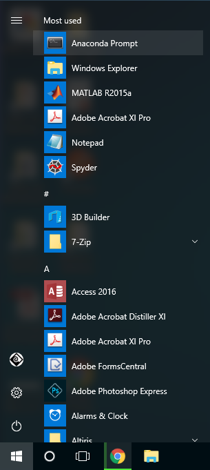

In this post, you'll see how to install pytesseract. You can use pytesseract to convert images into text. Pytesseract is a Python package that works with tesseract, which is a command-line optical character recognition (OCR) program. It's a super cool package that can read the text contained in pictures. Let's get to it.
Prerequisites
Before you can install pytesseract, you need to have a couple of things in place:
- A computer with an internet connection
- Anaconda distribution of Python
You are going to need a computer with an internet connection. If you are reading this post, there is a good chance there is a computer in front of you right now. As far as I know, you can't install pytesseract on a phone, tablet, or Chromebook. You are also going to need the Anaconda distribution of Python. Why Anaconda?
Why Anaconda?
You might be wondering, why do I need Anaconda to install Pytesseract? Well, you don't have to use the Anaconda distribution of Python when you install pytesseract, but I think it's a lot easier than other installation methods. You can install Python packages, but also non-Python packages with the Anaconda Prompt. Since tesseract is non-Python package needed to use pytesseract, I think the Anaconda distribution of Python and the conda package manager is the way to go.
What is pytesseract?
Pytesseract is a Python package that allows you to extract text from images. If you have a picture that has some text in it, pytesseract can pull out the text into a Python program. That's pretty cool. Pytesseract is a wrapper around a program from Google called tesseract. It's tesseract that extracts the text from pictures. Pytesseract is there to help you use tesseract in your Python programs.
What is tesseract?
Tesseract is a command-line application created by Google that can be used to pull text out of pictures. It is an example of an OCR application, which stands for Optical Character Recognition. Which is just a fancy way of saying using a computer to read text. Tesseract is capable of reading text in many different languages. It works best with computer-generated text like text in PDFs or pictures of receipts and invoices. It has a tougher time with images that contain handwritten words.
Before we get started with installation, we need to do something else first: create a virtual environment.
Create a virtual environment
Next, we are going to create a virtual environment to install pytesseract into. It's a good idea to create a new virtual environment for each Python project.

Open up the Anaconda Prompt from the Windows Start Menu and type the command below. You do not need to type >. The > is shown to indicate the prompt, not a character to type.
> conda create -y -n tesseract python=3.8
Now we have a new virtual environment called (tesseract). Before we can install packages into this environment, it needs to be activated. Activate the (tesseract) environment with the command below:
> conda activate tesseract
(tesseract) >
You know the (tesseract) virtual environment is active when you see the environment name (tesseract) before the prompt. In the next few steps, we are going to install packages into our (tesseract) environment. Make sure the environment is active when you run any conda install commands.
Install pytesseract
Now we are going to install pytesseract into our virtual environment. Make sure the (tesseract) environment is active. You can install pytesseract from PyPI, the Python package index using pip. But I suggest installing pytesseract with conda. Conda can manage non-Python dependencies and we want to be sure that pytesseract plays well with the other packages we install.
conda can install Python and non-Python packages. This makes it a great tool to install tesseract and pytesseract.
Use the command below to install pytesseract. Note the -c conda-forge portion of the command. This means we are installing pytesseract from the conda-forge channel. If you don't specify the channel, the installation will fail.
> conda install -c conda-forge pytesseract
You can confirm that pytesseract is installed in your virtual environment by hopping into the Python REPL and trying to import it.
> python
>>> import pytesseract
>>> help(pytesseract)
Help on package pytesseract:
NAME
pytesseract - # flake8: noqa: F401
...
>>> exit()
pytesseract is installed. Great! But before we can use it, we need to install the tesseract application.
Install tesseract
Now that pytesseract is installed, there are two more things we need to do before we can use it.
- install tesseract
- figure out where the tesseract executable is located
We can install tesseract using conda at the Anaconda Prompt, just like we installed pytesseract. Again, make sure the (tesseract) virtual environment is active before you run the conda install command. Type the command below to install tesseract.
> conda install -c conda-forge tesseract
You can confirm that tesseract is installed in your virtual environment by running the command below. The command calls up the tesseract help screen.
> tesseract -h
OK - one more step before we can use pytesseract, we need to figure out where our tesseract executable is installed. The tesseract executable location is needed for pytesseract to work properly.
Determine the location of your tesseract executable
The next step is to determine where the tesseract program is located on our computer. We need this location when we use pytesseract in a Python program. Typing the where <executable> command into the Anaconda Prompt shows the location of that <exectable>. where on Windows is sort of like the which command in MacOS and Linux.
> where tesseract
C:\Users\Peter\Anaconda3\envs\tesseract\Library\bin\tesseract.exe
Make note of this file path. We need the file path to use pytesseract in our Python program.
Point pytesseract at your tesseract installation
Create a Python script (a .py-file), or start up a Jupyter notebook. At the top of the file, import pytesseract , then point pytesseract at the tesseract installation you discovered in the previous step. Note the r' ' at the start of the string that defines the file location. The r indicates the string is a raw string. Raw strings don't include escape characters like \n for a new line. Therefore, we don't have to use double \\ backslashes in the Windows file path.
# test_pytesseract.py
try:
from PIL import Image
except ImportError:
import Image
import pytesseract
pytesseract.pytesseract.tesseract_cmd = r'C:\Users\Peter\Anaconda3\envs\tesseract\Library\bin\tesseract.exe'
Now we can use pytesseract to extract some text from a picture.
Use pytesseract
OK! Now it's time to pull text out of a picture. You are going to need a picture to pull text out of. The picture I'm using can be found here and is shown below.
{kind=link}
Make sure test_image.png is in the same folder as your Python program.
# test_pytesseract.py
try:
from PIL import Image
except ImportError:
import Image
import pytesseract
pytesseract.pytesseract.tesseract_cmd = r'C:\Users\Peter\Anaconda3\envs\tesseract\Library\bin\tesseract.exe'
text_from_image = pytesseract.image_to_string(Image.open('test_image.png'))
print(text_from_image)
Run the Python program or Jupyter notebook code cell and see the output.
The output produced should look something like below:
This is a lot of 12 point text to test the
ocr code and see if it works on all types
of file format.
The quick brown dog jumped over the
lazy fox. The quick brown dog jumped
over the lazy fox. The quick brown dog
jumped over the lazy fox. The quick
brown dog jumped over the lazy fox.
♀
Going Further
Now that pytesseract is installed what are you going to build? There are so many possibilities for projects:
- Use pytesseract to read different languages
- Run pytesseract on a stack of pdf's
- Try to see if pytesseract can read your handwriting
- See if pytesseract can read junk mail
- Incorporate pytesseract into a web application
Happy coding!